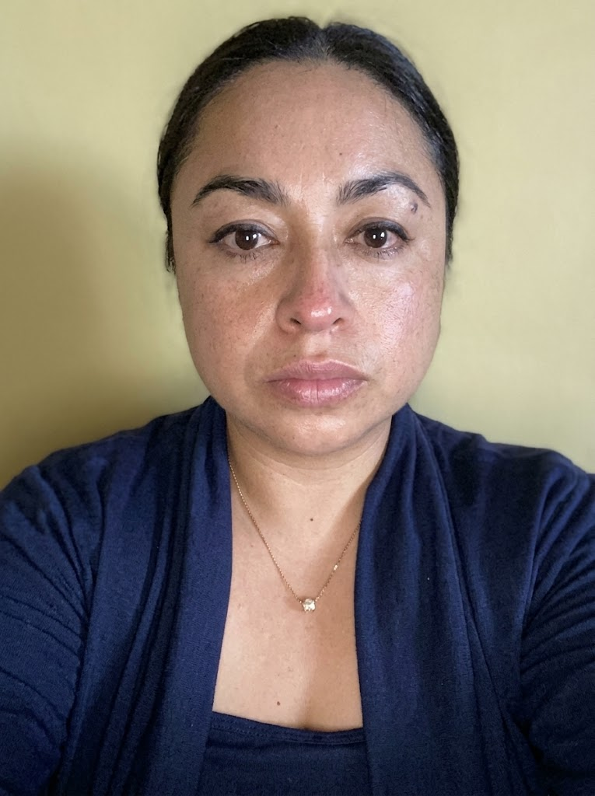

Comprometidos con la excelencia en consultoria sanitaria
Optimizar la gestion de los servicios de salud mediante soluciones de consultoria estrategicas, innovadoras y personalizadas para asi garantizar el cumplimiento normativo, la seguridad del paciente y la excelencia operativa.
Ser la consultoria sanitaria a nivel nacional reconocida por la integridad etica y compromiso humano con nuestros usuarios, impulsando la calidad en la atencion de cada proyecto.
Proporcionar soluciones integrales, estrategicas y legales a nuestros clientes.
Especialista en Derecho Sanitario
Licenciada en Derecho y Especialista en Derecho Sanitario por la Universidad Nacional Autonoma de Mexico (UNAM), con cedula profesional 14186569.
Su practica profesional se distingue por brindar asesoria juridica especializada al sector salud, enfocandose en la prevencion, analisis y solucion de conflictos legales, asi como en el cumplimiento integral de la normativa sanitaria.
Gracias a su solida experiencia en regulacion sanitaria incluyendo los procedimientos de COFEPRIS, ofrece estrategias legales que permite a los profesionales, establecimientos y empresas del sector salud operar con seguridad, confianza y pleno cumplimiento de la legislacion vigente.

Especialista en Derecho Sanitario
Licenciada en Gerontologia, egresada de la Universidad Estatal del Valle de Ecatepec y Especialista en Derecho Sanitario por la Universidad Nacional Autonoma de Mexico Fes Acatlan. Con cedula profesional 9680384.
Su trayectoria de mas de 15 anos en el ambito clinico y terapeutico le ha permitido comprender, desde la practica profesional, los retos que enfrentan quienes prestan servicios de salud. A lo largo de su experiencia, ha constatado las consecuencias que puede generar el desconocimiento del marco juridico y la normativa sanitaria, asi como los riesgos que genera una inadecuada asesoria legal.
La combinacion de su experiencia clinica y su formacion juridica le permite ofrecer un enfoque integral, donde el cumplimiento normativo se acompane de una vision etica y humana.